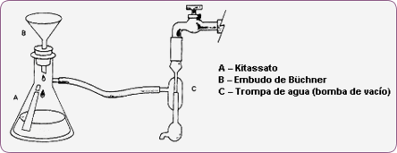
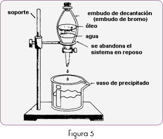
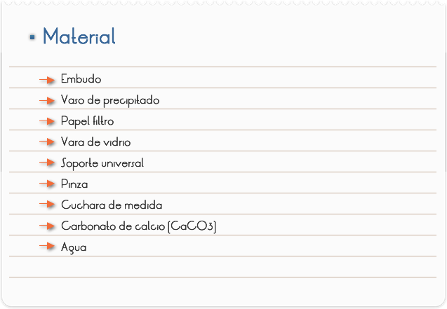
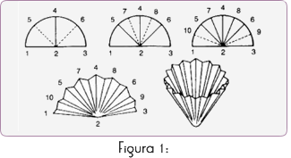
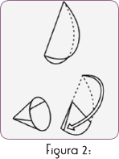
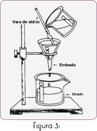
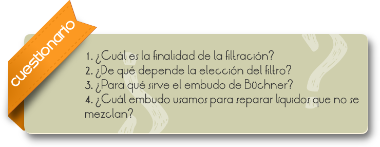

Introducción
La filtración tiene por finalidad separar partículas sólidas suspensas en un fluido (gaseoso o líquido). Los materiales filtrantes son porosos, dejan el fluido pasar pero retienen las partículas en él suspendidas.
La elección del tipo de filtro depende del tamaño y naturaleza de las partículas de sólido. Los filtros más comunes son: el papel de filtro, algodón en rama, lana de vidrio (o de roca), vidrio poroso, porcelana porosa, etc. En las operaciones industriales, se utilizan tejidos de paño, tejidos plásticos, tejidos metálicos, arena y pedrejones.
El tipo de embudo usado, depende del tipo de filtración a ser realizado. En las filtraciones simples se utiliza el embudo simple y en las filtraciones al vacío, se utiliza el embudo de Büchner (figura 4), adaptado al frasco kitasato, dentro del cual el aire es enrarecido por medio de una bomba de vacío o una trompa de agua.
La mezcla es vaciada, el papel filtro deja pasar el líquido y retiene el material sólido. Debe tenerse cuidado al cortar el papel filtro de modo que no permita que pasen los residuos para lo filtrado.

La filtración al vacío (por succión o filtraje a presión reducida), es empleada en la separación de mezclas sólido-líquidas, usándose la técnica mostrada en la Figura 4. Este tipo de filtro tiene la ventaja de ser la más rápida y dejar menor cantidad de impurezas y de solvente en el sólido.
En la separación de líquidos no mezclables se utiliza el embudo de decantación (o embudo de Bromo) y se usa la técnica mostrada en la Figura 5.

Objetivo
Adquirir habilidades en trabajos con equipamientos básicos de laboratorio.

PARTE I: TÉCNICA PARA DOBLAR EL PAPEL FILTRO
1) Doblar el papel de acuerdo con la técnica mostrada en la Figura 1, para filtrar lentamente y cuando haya mayor necesidad de utilizar el líquido.

2) Utilizar la técnica mostrada en la Figura 2, para efectuar filtración más rápida y cuando haya mayor interés en utilizar la parte sólida.

PARTE II: REALIZANDO EL FILTRADO SIMPLE
1. Colocar 50 ml. de agua en un vaso de precipitado, agregar 2 cucharas de medida de bicarbonato de calcio y sacudir.
2. Efectuar el filtrado conforme al esquema indicado en la Figura 3.

3. Observar y anotar
